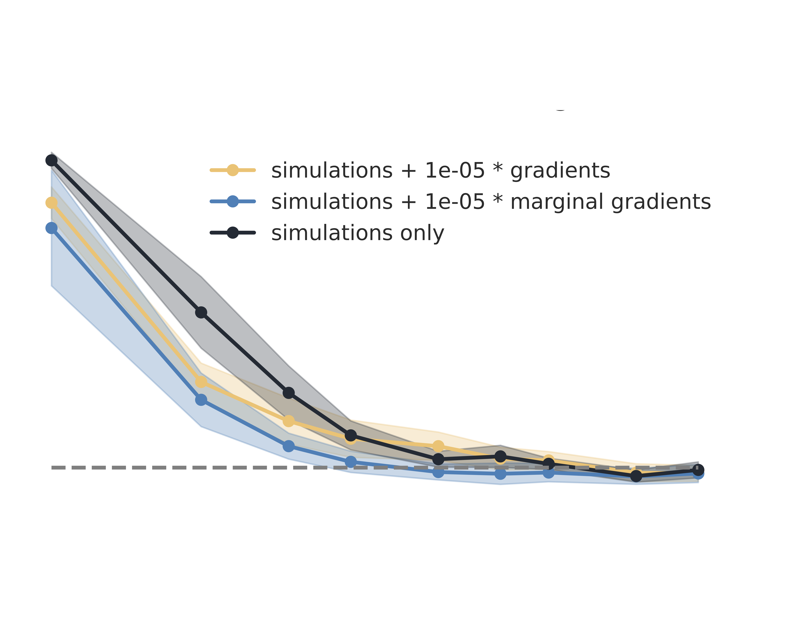
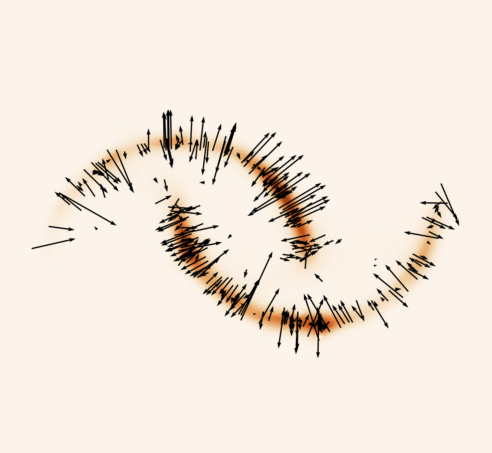

Justine Zeghal
About Me
I am a Postdoctoral Fellow at Ciela Institute, the department of Physics of Université de Montréal and Mila, working with Prof. Laurence Perreault-Levasseur and Prof. Yashar Hezaveh. My research focuses on developing and leveraging machine learning methods to tackle complex challenges in cosmology, pushing the boundaries of what we can learn about the Universe. In a broader sense, I am deeply passionate about exploring ways to bridge physics with machine learning to drive scientific discoveries.
Prior to joining the University of Montreal, I earned my PhD in cosmology and machine learning at Université Paris Cité, supported by a diiP scholarship. I conducted my research under the supervision of Dr. François Lanusse, Dr. Alexandre Boucaud, and Dr. Eric Aubourg.
Research Interests
- Cosmology
- Bayesian Inference
- Simulation-Based Inference
- Generative Models
Selected Publications
-
 A&AAstronomy & Astrophysics (A&A), 2023.
-
 A&A
Astronomy & Astrophysics (A&A), 2023.
A&A
Astronomy & Astrophysics (A&A), 2023. -
 ICML ML4AstroICML 2022 Workshop on Machine Learning for Astrophysics (ICML ML4Astro), 2022.